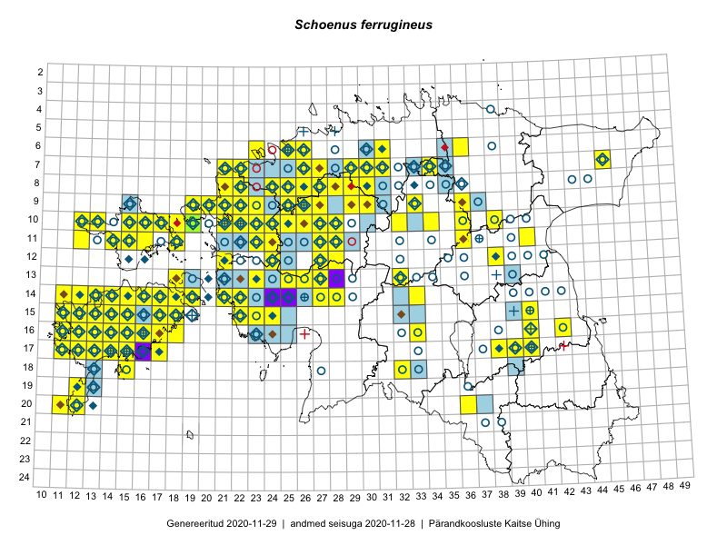

Schoenus ferrugineus
Uuendatud: 2016-12-01
Kaardile koondatud taksonid: Schoenus ferrugineus L.

Kaart põhineb 156 kirjel.
Kuvatud viited 20 esimesele andmebaasikirjele, ülejäänud PlutoFis
- Tiit Hallikma, Toomas Kukk, Indrek Tammekänd: 2015-06-09: 12-28: ala
- Peedu Saar, Toomas Kukk: 2015-05-28: 10-15: ala
- Toomas Kukk, Eerik Leibak: 2015-08-09: 14-15: ala
- Toomas Kukk, Eerik Leibak: 2015-08-12: 10-17: ala
- Ott Luuk: 2015-06-28: 13-26: ala
- Tiit Hallikma, Toomas Kukk, Indrek Tammekänd: 2015-06-08: 14-27: ala
- Tiit Hallikma, Toomas Kukk: 2015-08-27: 12-21: ala
- Tiit Hallikma, Toomas Kukk: 2015-08-24: 12-24: ala
- Thea Kull: 2015-06-14: 10-13: ala
- Ott Luuk, Hannes Pehlak: 2015-07-22: 07-45: ala
- Ott Luuk, Elle Roosaluste, Jaak-Albert Metsoja: 2015-06-15: 14-16: ala
- Peedu Saar: 2015-09-07: 16-17: ala
- Meeli Mesipuu, Kadri Tali: 2015-07-06: 16-17: ala
- Thea Kull, Peedu Saar: 2015-06-19: 17-40: ala
- Ott Luuk, Hannes Pehlak: 2015-06-10: 14-28: ala
- Meeli Mesipuu: 2015-07-11: 14-19: ala
- Meeli Mesipuu: 2015-07-11: 14-19: GPS punkt
- Toomas Kukk, Thea Kull: 2014-08-22: 10-23: ala
- Toomas Kukk, Ott Luuk, Sander Laherand: 2014-08-24: 14-22: ala
- Jana-Maria Habicht, Ester Valdvee: 2015-07-20: 07-34: ala